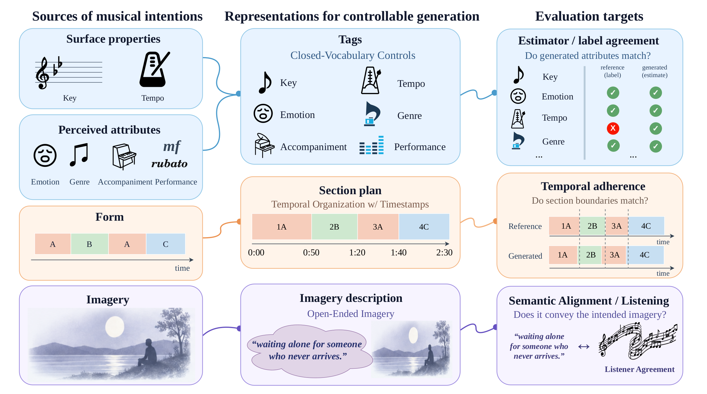
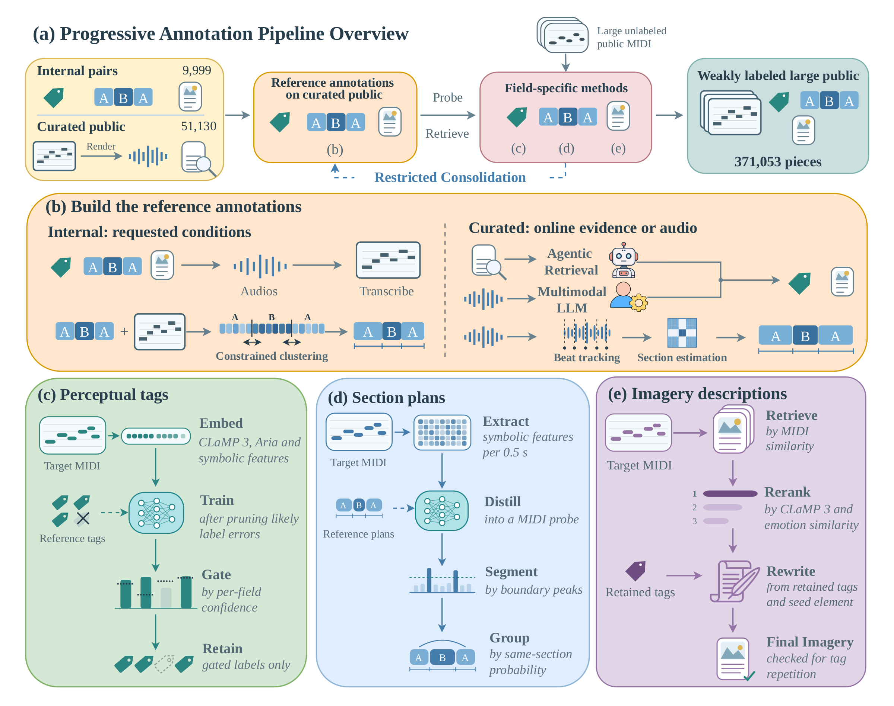
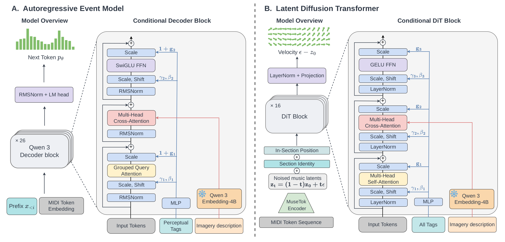

Caption-conditioned baselines receive the same tags and imagery description as a text caption.
Text-conditioned symbolic music generation lets users steer editable music with language, yet two questions remain underexplored: what a conditioning description should contain, and how data for such descriptions should be collected and used for training. We address both questions with TASTE, a taxonomy-aware framework for symbolic music generation with main focus on piano. First, we introduce a taxonomy that separates finite-vocabulary tags (key, tempo, emotion, genre, accompaniment, and performance style), a section plan for temporal form, and a free-form imagery description of the scene or atmosphere a piece evokes. Each part of a description can then be annotated, learned, and evaluated on its own terms. Second, we build a multi-tier annotation pipeline that draws each condition from suitable evidence and propagates annotations from 10K directly paired and 51K curated public performances to 371K weakly labeled MIDI files. Finally, we design a staged training recipe that moves through these tiers from broad weak supervision to direct pairs, and instantiate it in both an autoregressive decoder and a latent diffusion transformer. Both objective and subjective evaluations demonstrate substantial improvement on condition alignment at almost all fields over caption-conditioned baselines while maintaining competitive music quality. We will release the full pipeline, the annotated datasets, and the model checkpoints.

TASTE splits a description into three parts that play different roles: six finite-vocabulary tags (key, tempo, emotion, genre, accompaniment, and performance style), a section plan that fixes the piece's form over time, and a free-form imagery description of the scene or atmosphere the music evokes. Each part is annotated, learned, and evaluated on its own terms.

A multi-tier pipeline draws each condition from the evidence best suited to it. About 10K directly paired pieces and 51K curated public performances, annotated from compositional context or rendered audio, anchor the labels; confidence-gated tag probes and retrieved imagery descriptions then extend them to 371K weakly labeled MIDI files. Section plans come from structure analysis at every tier.

The same staged recipe, moving from MIDI pretraining through the weakly labeled, curated, and directly paired tiers, trains two generators: an autoregressive decoder that writes its own section plan before the notes, and a latent diffusion transformer that generates a whole piece under a given plan. Tags enter through adaptive layer normalization and the imagery description through cross-attention over a frozen text encoder.